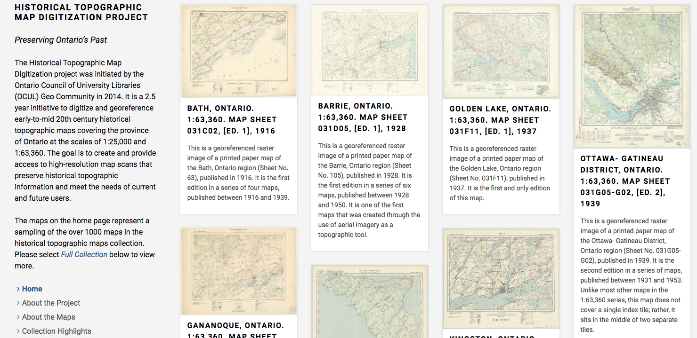
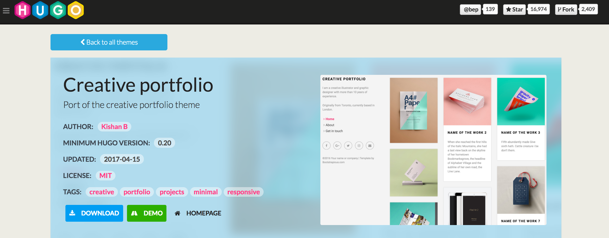
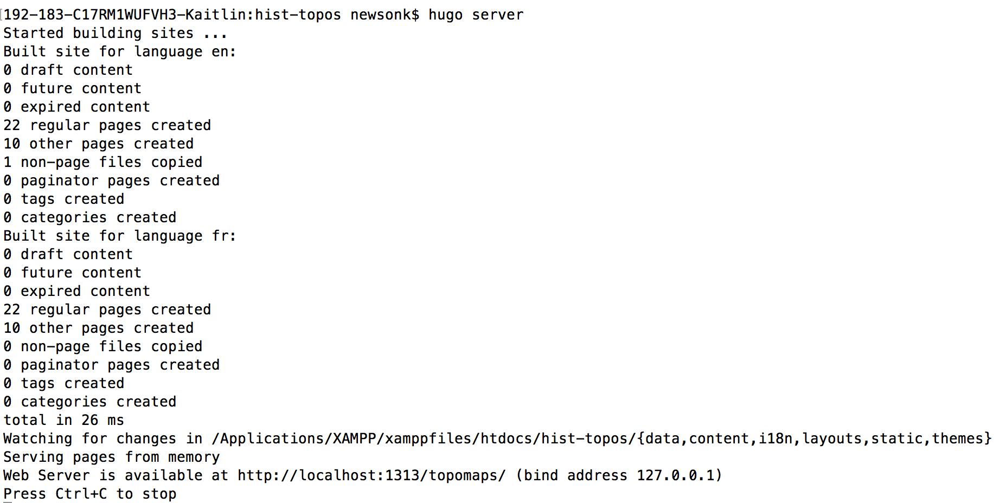
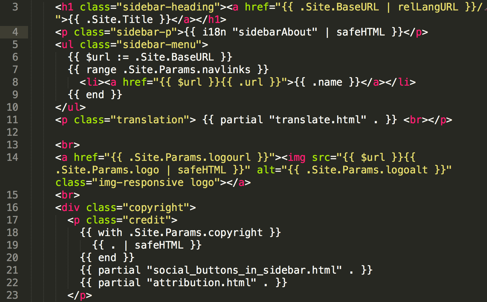

Getting Started with Static Website Generators
Kaitlin Newson (@kaitlinnewson), Digital Projects Librarian, Scholars Portal
Kim Pham (@tolloid), Digital Projects Librarian, University of Toronto Scarborough
Slides: link
What is a static website?
- Made up of HTML, CSS, & JavaScript
- No back-end scripting languages, databases, or CMS
- Displayed to user as it exists on the server
What is a static website generator?
- Template language & markup language
- Compiles into HTML/CSS files
- Built-in server for testing
- Many options - over 200 options on staticgen.com
- Most popular is Jekyll (built in Ruby)
Benefits
- Performance & speed
- Less technical maintenance
- Less resource intensive
- Security benefits
- Version control
- Simple hosting, e.g. Github pages
Drawbacks
- Learning curve
- No editing environment (but there are options)
- No dynamic elements
Hugo
Why Hugo?
- Speed
- Less dependencies
- Built-in multilingual functionality
- Integrations (Google analytics, formspree, disqus)
Basic Hugo workflow feat. maps!
ocul.on.ca/topomaps | github.com/scholarsportal/historical-topos
Install
snap package, homebrew, single binary download
Create the site
hugo new site topomaps
▸ archetypes/
▸ content/
▸ data/
▸ i18n/
▸ layouts/
▸ static/
▸ themes/
config.toml
Add a theme
themes.gohugo.io/hugo-creative-portfolio-theme

cd themes
git clone https://github.com/kishaningithub/hugo-creative-portfolio-theme.git
Theme example site
Many themes have an example site that you can copy to get started
cp -r themes/hugo-creative-portfolio-theme/exampleSite/* .
Built-in development server
Configuration & Content
- The configuration file (toml, yaml, or json) contains menus, metadata, etc.
- Content lives in the
content/anddata/folders - Assets (e.g. images, custom CSS & JavaScript) live in
static/
config.toml
baseurl = "http://ocul.on.ca/topomaps/"
theme = "hugo-creative-portfolio-theme"
# Enable comments by entering your Disqus shortname
disqusShortname = ""
# Enable Google Analytics by entering your tracking code
googleAnalytics = ""
canonifyURLs = false
defaultContentLanguage = "en"
defaultContentLanguageInSubdir = false
[params]
logourl = "http://ocul.on.ca"
style = "blue"
email = "topomaps@scholarsportal.info"
[params.social]
github = "https://github.com/scholarsportal/historical-topos"
email = "topomaps@scholarsportal.info"
[Languages]
[Languages.en]
languageName = "English"
title = "Historical Topographic Map Digitization Project"
languageCode = "en"
weight = 1
logo = "img/ocul.png"
logoalt = "Ontario Council of University Libraries"
[[Languages.en.navlinks]]
name = "Home"
url = ""
[[Languages.en.navlinks]]
name = "About the Project"
url = "about-project/"
[[Languages.en.navlinks]]
name = "About the Maps"
url = "about-maps/"
[[Languages.en.navlinks]]
name = "Collection Highlights"
url = "highlights/"
[[Languages.en.navlinks]]
name = "Using the Maps"
url = "using-maps/"
[[Languages.en.navlinks]]
name = "Full Collection"
url = "collection/"
[[Languages.en.navlinks]]
name = "FAQ"
url = "faq/"
[[Languages.en.navlinks]]
name = "Contact"
url = "contact/"
[Languages.fr]
languageName = "Français"
title = "Projet de numérisation de la carte topographique historique"
languageCode = "fr"
weight = 2
logo = "img/cbou.png"
logoalt = "Conseil des bibliothèques universitaires de l'Ontario"
[[Languages.fr.navlinks]]
name = "Accueil"
url = "fr/"
[[Languages.fr.navlinks]]
name = "À propos du projet"
url = "fr/about-project/"
[[Languages.fr.navlinks]]
name = "Au sujet des cartes"
url = "fr/about-maps/"
[[Languages.fr.navlinks]]
name = "Points saillants de la collection"
url = "fr/highlights/"
[[Languages.fr.navlinks]]
name = "Utiliser les cartes"
url = "fr/using-maps/"
[[Languages.fr.navlinks]]
name = "Parcourir la collection au complet"
url = "fr/collection/"
[[Languages.fr.navlinks]]
name = "FAQ"
url = "fr/faq/"
[[Languages.fr.navlinks]]
name = "Nous contacter"
url = "fr/contact/"
Content creation
Hugo content is written in Markdown, with added HTML
+++
date = "2017-03-16"
title = "Using the Maps"
+++
[Scholars GeoPortal](http://geo.scholarsportal.info) is an online geoportal that allows users to find and download geospatial data and maps. Using the GeoPortal and the built-in map index navigation, users can view map availability by location, and, add maps to the map viewer to explore online. The GeoPortal also supports features to layer multiple maps, and layer other data to visualize changes over time. Maps can be downloaded for any purpose and available in GeoTIFF or JPG formats. Follow the steps below to learn more about how to access and use the collection in the GeoPortal.
To search for maps directly by place name without entering the GeoPortal, go to [_Full Collection_](../collection/).
## Finding Maps
### Using the index
The first step to accessing the historical topographic map collection is to locate and use the index navigation aid. There are two sets of historical topographic map collections available in the Scholars GeoPortal, each with their own index map for navigation, one for the 1:63,360 and 1:25,000 scale map sets. Using the index navigation, you can view map availability by selecting the area of interest found on the map.
In Scholars GeoPortal, maps are available through an interactive online index display. To access the map indexes for different map scales, go directly to the Scholars GeoPortal:
- [1:63 360 Index Navigation](http://geo.scholarsportal.info/#r/details/_uri@=564032357&_add:true)
- [1:25 000 Index Navigation](http://geo.scholarsportal.info/#r/details/_uri@=847590539&_add:true)
You should now be presented with the index navigation aid to select maps of interest.

Customization
- We can add custom CSS or JavaScript, or override the existing templates
- Templates determine the layout of the site
- Hugo templates use the Go templating language
Go templates
Building the site
Build the public files, then copy them to the web server
cd topomaps
hugo
404.html
▸ collection/
▸ en/
▸ img/
▸ maps/
▸ about-maps/
placenames.json
▸ faq/
index.html
sitemap.xml
▸ about-project/
▸ contact/
▸ fr/
index.xml
▸ tags/
▸ categories/
▸ css/
▸ highlights/
▸ js/
▸ using-maps/